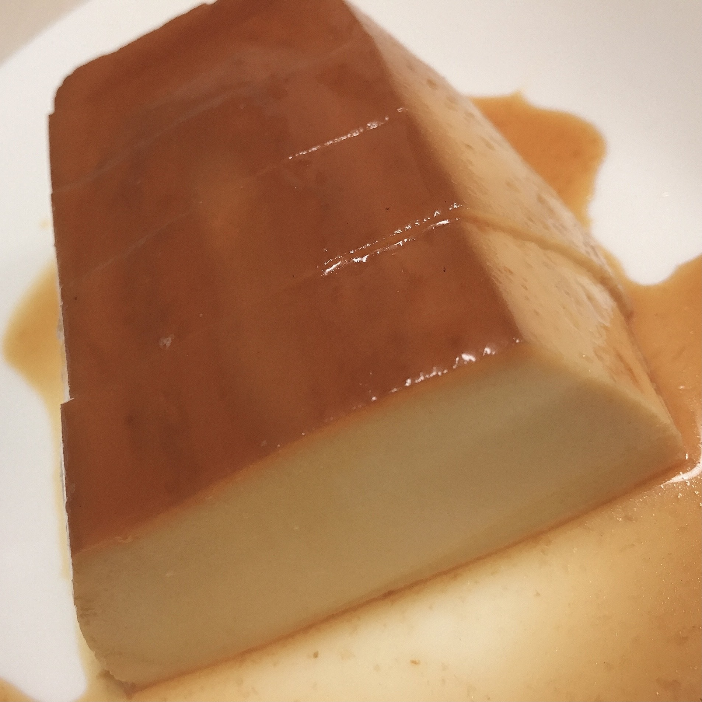

main
side
dessert
drink
イタリアンプリン

材料(パウンド型1個分)
〇カラメル
グラニュー糖 40g
水 大さじ1
お湯 大さじ1
〇プリン液
牛乳 300㏄
生クリーム 100㏄
きび砂糖 90g
クリームチーズ 100g
溶き卵 4個分
〇容器に塗る用
無塩バター 3g
作り方
1. クリームチーズを常温に戻す。型にバターを薄く塗る。
2. 鍋にグラニュー糖、水を入れて中火で熱し、薄い茶色になったら火を止める。
3. お湯を加えて全体になじませ、型に流し入れ、冷蔵庫で20分ほど冷やす。
お湯を入れる際、跳ねるので注意。
4. 鍋に牛乳、生クリーム、きび砂糖 1/2 (45g)を入れ、混ぜながら中火で熱し、鍋の淵に小さな気泡ができたら火を止める。
5. オーブンを160℃に予熱する。
6. ボウルにクリームチーズを入れ、柔らかくなるまで混ぜ、残りのきび砂糖(45g)を加えてさらに混ぜる。
7. 溶き卵を3回に分けて加えて、その都度混ぜる。
8. 3を少しずつ加えながら混ぜ、濾しながら型に入れる。
9. 耐熱バットに濡れ布巾を敷き、型を乗せる。
10. お湯を型の底から2cm程の高さまで注ぎ、160℃に予熱したオーブンで40～50分程焼く。
11. 型を揺らして真ん中だけが揺れる場合は追加で加熱する。
12. 粗熱が取れたら、冷蔵庫で2時間以上冷やして完成。